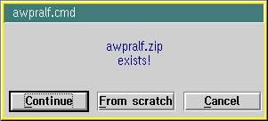

Last updated on 11 Jul 2001, at 22.01 CDT.
By Ralf Maseratis (ralf_maseratis@esper.ping.de).
This product includes software developed by Dmitry A.Steklenev.
- Short description
- Prerequisites
- Installation
- How it works
- Limitations, Possible Problems, To Do and Don't
ask for...
- Copyrights
- Credits
- History
- awpralf.cfg
Short description
Awpralf.cmd is a global plugin for Auto WGet Daemon. It adds some
features to this wonderful download manager:
-
If Auto WGet Daemon uses the desktop, awpralf.cmd can
"prescan" the desktop and move URL objects which are not
supposed to be downloaded to a folder of your choice.
-
With awpralf.cmd Auto WGet Daemon optionally can save files to
different directories automatically, depending on the file
extensions.
-
Awpralf.cmd optionally can check for possible duplicate files before
Auto WGet Daemon starts a download job. When finding a duplicate,
awpralf.cmd gives the opportunity to continue the download, to start it
from the beginning or to cancel it.
-
Awpralf.cmd is configured through its configuration file awpralf.cfg.
-
Awpralf.cmd uses pmpopup2.exe (included in Auto WGet Daemon) for
user interaction.
Back to index
Prerequisites
For using awpralf.cmd you'll need:
-
OS/2 Warp 4 or better with "classic" or Object REXX
support
-
Auto WGet Daemon version 1.6.5 or higher
-
A file system capable of long filenames (HPFS or FAT32)
Back to index
Installation
-
Copy awpralf.cmd to the "Plugins"-directory of Auto WGet
Daemon
-
Add the following line to Auto WGet Daemon's configuration file
"awget.cfg":
GLOBAL_PLUGIN = Plugins\awpralf.cmd
awget.cfg is located in directory %ETC% (search for "SET
ETC=" in config.sys)
-
Copy sample awpralf.cfg to the same place where awget.cfg is
located
-
Edit %ETC%\awpralf.cfg. This sample awpralf.cfg contains detailed
comments. You can view in-depth information about this file here.
After editing awpralf.cfg you'll have to restart Auto
WGet Daemon to activate awpralf's features!
Back to index
How it works
As a global plugin awpralf.cmd is started along with Auto WGet Daemon.
For any action Auto WGet Daemon performs it sends a message to the plugin,
giving it the opportunity to do additional tasks. For details on Auto WGet
Daemon plugins see Auto WGet Daemon's readme.
Desktop "prescanning"
Awpralf.cmd can "prescan" the desktop directory.
"Prescanning" happens just before Auto WGet Daemon itself scans
the desktop for downloadable URLs.
This feature is meant to ease the use of Netscape Communicator's
v4.61 drag'n'drop abilities. I'm using URL objects as
bookmarks, and it kept bothering me that Auto WGet Daemon just tries to
download each and any HTTP- or FTP-URL - even if I only wanted to add them
to my bookmark folder. Now awpralf.cmd decides whether to let Auto WGet
Daemon download the URL.
To enable "prescanning" Auto WGet Daemon must be configured to
use the desktop (USE_DESKTOP = 1 in awget.cfg) and in awpralf.cfg OBSOLETE_OBJECTS directory must be set.
Then awpralf.cmd does a preliminary search for URL objects on the
desktop, just before Auto WGet Daemon does the same. For every found URL
object awpralf.cmd tries to determine a file extension contained in the
URL. If a file extension is found, it is compared to the extension lists in
OBSOLETE_EXT and SECURE_EXT (see awpralf.cfg).
-
If an OBSOLETE_EXT is found, awpralf.cmd
moves the URL object to the directory stated in OBSOLETE_OBJECTS. If the OBSOLETE_OBJECTS directory doesn't
exists, it will be created as a WPUrlFolder object.
The same happens if the URL ends in "/" (or does anybody
want to use Auto WGet Daemon to download index.html of a server
directory?).
-
If a SECURE_EXT is found, the URL object
is not touched. Further processing is left to Auto WGet Daemon
then.
-
If none of the above conditions is matched, the following dialog
appears:
You then have the choice to let Auto WGet Daemon continue with
processing this URL object (by pressing "Yes") or to move it
to OBSOLETE_OBJECTS (by pressing
"No").
"Extended download"
Awpralf.cmd can intercept any Auto WGet Daemon download job (by using
Auto WGet Daemon's plugin interface), thus providing different download
directories.
If at least one EXT_DOWNLOAD entry is
properly configured in awpralf.cfg, awpralf.cmd tries to determine the
extension of the file to be downloaded. It then compares this extension
with all EXT_DOWNLOAD entries. On a match
awpralf.cmd manipulates Auto WGet Daemon's jobfile, replacing the
download directory there (and creating it beforehand, if necessary).
Dupe checking
Before Auto WGet Daemon starts a download, awpralf.cmd can check if the
file to be downloaded already exists in the download directory. This is
triggered by DUPE_CHECK in awpralf.cfg. If a file
of the same name already exists, the following dialog appears:

You then have the choice to:
-
Cancel the download completely.
Awpralf.cmd then tells Auto WGet Daemon to cancel the download
job.
-
Start the download from scratch.
Awpralf.cmd then moves the existing file to
a backup in the download directory. The backup name contains the string
"_AWGetBkp_" and a generation number. After that awpralf.cmd
returns execution of the download job to Auto WGet Daemon.
-
 Continue the job.
Continue the job.
Awpralf.cmd then copies the existing file to
a backup in the download directory. The backup name contains the string
"_AWGetBkp_" and a generation number. After that awpralf.cmd
returns execution of the download job to Auto WGet Daemon.
Back to index
Limitations, Possible Problems, To Do and Don't ask for...
Limitations
- "Prescanning" will not work on Warp 3 because WPUrl and
WPUrlFolder are missing there.
- No National Language Support (see "Don't ask
for...")
Possible Problems
- Awpralf.cmd was developed and tested on WSeB FP2 with Object REXX.
Works with "classic" REXX, too, but was not extensively
tested.
To Do
- Maybe switching off wget proxies depending on file extension?
Don't ask for...
- National Language Support (see "Limitations")
Back to index
Copyright
The code of awpralf.cmd is under copyright 1998-2001 Dmitry A.Steklenev.
Parts of code contributed by Ralf Maseratis. All code
underlies following conditions:
Copyright (C) 1998-2001 Dmitry A.Steklenev
Redistribution and use in source and binary forms, with or without
modification, are permitted provided that the following conditions are
met:
-
Redistributions of source code must retain the above copyright
notice, this list of conditions and the following disclaimer.
-
Redistributions in binary form must reproduce the above copyright
notice, this list of conditions and the following disclaimer in the
documentation and/or other materials provided with the
distribution.
-
All advertising materials mentioning features or use of this
software must display the following acknowledgment:
"This product includes software developed by Dmitry
A.Steklenev".
-
Redistributions of any form whatsoever must retain the following
acknowledgment:
"This product includes software developed by Dmitry
A.Steklenev".
THIS SOFTWARE IS PROVIDED BY THE AUTHOR OR CONTRIBUTORS "AS
IS" AND ANY EXPRESSED OR IMPLIED WARRANTIES, INCLUDING, BUT NOT
LIMITED TO, THE IMPLIED WARRANTIES OF MERCHANTABILITY AND FITNESS FOR A
PARTICULAR PURPOSE ARE DISCLAIMED. IN NO EVENT SHALL THE AUTHOR OR THE
CONTRIBUTORS BE LIABLE FOR ANY DIRECT, INDIRECT, INCIDENTAL, SPECIAL,
EXEMPLARY, OR CONSEQUENTIAL DAMAGES (INCLUDING, BUT NOT LIMITED TO,
PROCUREMENT OF SUBSTITUTE GOODS OR SERVICES; LOSS OF USE, DATA, OR PROFITS;
OR BUSINESS INTERRUPTION) HOWEVER CAUSED AND ON ANY THEORY OF LIABILITY,
WHETHER IN CONTRACT, STRICT LIABILITY, OR TORT (INCLUDING NEGLIGENCE OR
OTHERWISE) ARISING IN ANY WAY OUT OF THE USE OF THIS SOFTWARE, EVEN IF
ADVISED OF THE POSSIBILITY OF SUCH DAMAGE.
Back to index
Credits
Thanks to
- Dmitry A.Steklenev for maintaining Auto WGet Daemon, for creating the
plugin interface and for his help on this program.
- Christian Hennecke (christian.hennecke@os2voice.org)
for testing and help on this documentation.
- Harald Kamm (harald.kamm@bnv-bamberg.de)
for testing.
- Bernd Schemmer for the "REXX Tips and Tricks".
Back to index
History
release 0.3.1:
- Bugfix: on "prescanning" awpralf.cmd broke down when URL
contained in URL object had less than 18 characters. Fixed.
release 0.3: first public release
Unofficial: based on code used to "hack" older Auto WGet
versions (those without plugin interface) for private use. As Dmitry
A.Steklenev is now updating Auto WGet in rapid order, "hacking"
every new release is no solution anymore... :-)
Back to index
awpralf.cfg
Awpralf.cfg (located in %ETC%) configures all features of awpralf.cmd by
pairs of "KEYWORD = VALUE" entries (just like awget.cfg does for
Auto WGet Daemon).
BEWARE: After editing awpralf.cfg you'll have to restart
Auto WGet Daemon to activate awpralf's features!
| KEYWORD |
= |
VALUE |
| EXT_DOWNLOAD |
= |
extension,directory |
|
EXT_DOWNLOAD configures which files are stored in which
directories
|
|
comma separated pair of extension and
directory
extension: case independent extension of download
file
directory: where to save files which end in
extension
directory may be a complete path (must contain
driveletter) or a path relative to global DOWNLOAD path in
awget.cfg. All characters after the comma (except leading or
trailing spaces) are interpreted as directory name.
If directory does not exist, awpralf.cmd tries to
create it
|
|
There is no explicit limit for the number of
EXT_DOWNLOAD-entries in awpralf.cfg.
To deactivate this feature, comment out all
EXT_DOWNLOAD-entries in awpralf.cfg.
|
|
Examples:
-
If extension of downloaded file is "mpg", save the
file to "e:\wgetdownloads\video":
EXT_DOWNLOAD = MPG,e:\wgetdownloads\video
-
If extension of downloaded file is "exe", save the
file to "d:\all my downloaded exe files":
EXT_DOWNLOAD = EXE,d:\all my downloaded exe
files
-
If extension of downloaded file is "zip", save the
file to subdirectory "zipped" of Auto WGet
Daemon's global download directory (set by "DOWNLOAD
=" in awget.cfg):
EXT_DOWNLOAD = ZIP,zipped
|
Back to index
| KEYWORD |
= |
VALUE |
| DUPE_CHECK |
= |
1 or 0 |
|
Turns checking of duplicate files on or off
|
|
1 or 0
|
Back to index
| Following option only becomes active if
USE_DESKTOP = 1 in awget.cfg! |
| KEYWORD |
= |
VALUE |
| OBSOLETE_OBJECTS |
= |
directory |
|
Directory where to move desktop URL objects which are not
supposed to be downloaded by Auto WGet Daemon
|
|
Full path of directory
All characters after "=" except leading or trailing
spaces count as the directory name. So, if directory name contains
spaces, do not quote it!
If directory does not exist, awpralf.cmd tries to
create it as a WPUrlFolder
|
|
Deleting or commenting out OBSOLETE_OBJECTS disables all
"prescanning" of the desktop, OBSOLETE_EXT and SECURE_EXT have no meaning then!
|
|
Examples:
-
Move desktop URL objects which are not supposed to be
downloaded to directory "F:\URLs\temporary url
folder":
OBSOLETE_OBJECTS = F:\URLs\temporary url folder
-
Disable all desktop "prescanning":
#OBSOLETE_OBJECTS = F:\URLs\URLTMP
|
Back to index
| Following option only becomes active if
USE_DESKTOP = 1 in awget.cfg and OBSOLETE_OBJECTS is active! |
| KEYWORD |
= |
VALUE |
| OBSOLETE_EXT |
= |
extension1,extension2,extension3
... |
|
File extensions of URLs contained in desktop URL objects which
will never be downloaded by Auto WGet Daemon and instead
always be moved to OBSOLETE_OBJECTS directory
|
|
case independent comma separated list of file extensions
|
|
Example:
Move all URL objects on desktop which end in .HTM, .HTML, .SHTM,
.SHTML or .ASP to directory F:\URLs\URLTMP:
OBSOLETE_OBJECTS = F:\URLs\URLTMP
OBSOLETE_EXT = HTM,HTML,SHTM,SHTML,ASP
|
Back to index
| Following option only becomes active if
USE_DESKTOP = 1 in awget.cfg and OBSOLETE_OBJECTS is active! |
| KEYWORD |
= |
VALUE |
| SECURE_EXT |
= |
extension1,extension2,extension3
... |
|
File extensions of URLs contained in desktop URL objects which
always will be downloaded by Auto WGet Daemon (without
asking)
|
|
case independent comma separated list of file extensions
|
|
Example:
Let Auto WGet Daemon proceed with URLs from desktop's URL
objects when they end in .ZIP, .EXE, .MOV, .MPG, .MPEG, .JAR, .JPG,
.JPEG or .GIF:
SECURE_EXT = ZIP,EXE,MOV,MPG,MPEG,JAR,JPG,JPEG,GIF
|
Back to index